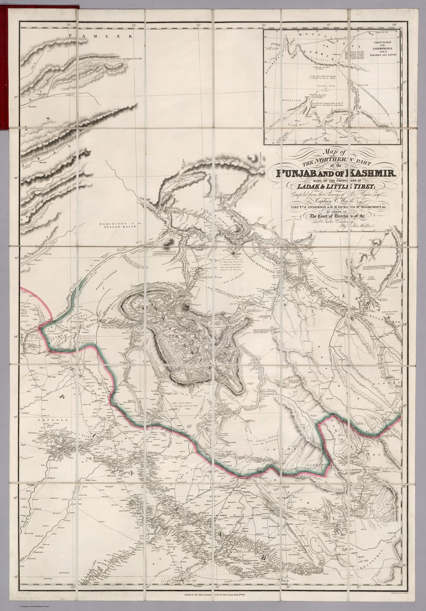

← Administered Empire and Victorian Atlas

A composite frontier geography
Walker compiled the map from the surveys and travels of G. T. Vigne, Claude Wade and Lieutenants J. Anderson and H. M. Durand. J. & C. Walker engraved it as a large folding case map. Its coverage stretches from the Punjab plains through the Vale of Kashmir and the mountain routes toward Ladak and ‘Little Tibet’.
Published in a political hinge year
The map was issued on 30 March 1846, after the First Anglo-Sikh War and the treaties that transformed the political position of Kashmir and the Punjab. The East India Company required improved knowledge of roads, passes, forts and terrain while deciding how power and administration would operate across the region.
Uneven information at the frontier
The map joins measured routes, travellers’ observations and fragmentary intelligence. Density decreases toward the high mountain margins, but the sheet’s single engraved surface can make radically unequal kinds of evidence appear equally secure.
The gaze
The four named authorities were travellers and officers of different kinds, and the sheet folds their differing methods into one engraved line. Published that March, after the treaties, it gave the Company a picture of Kashmir at the moment the territory’s future was being settled, and the picture thins out precisely where the mountains rise.